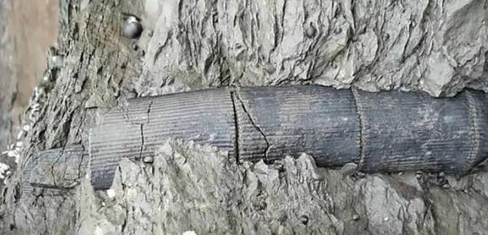
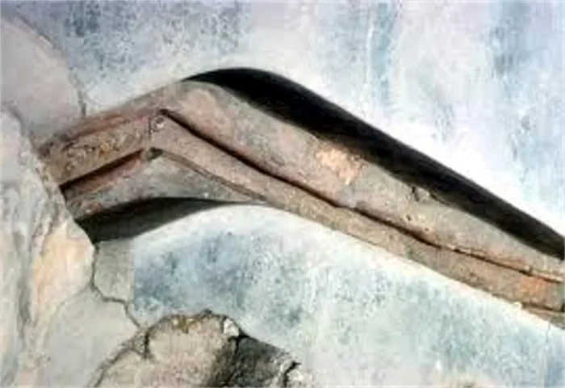

Zusammenfassung
Die Baigong Pipes, auch als Delingha Pipes bezeichnet, gehören zu den kuriosesten Fundgeschichten aus der modernen Mystery-Folklore Chinas. Berichte sprechen von metallisch wirkenden Röhren in und an einer Höhle von Mount Baigong, plus weiteren Strukturen am Ufer eines nahen Salzsees. Manche Röhren sollen dick sein, andere dünn wie Strohhalme, wieder andere direkt im Gestein verschwinden. Dazu kommen Altersangaben von 3000 Jahren, deutlich älter oder sogar völlig absurden prähistorischen Datierungen, je nachdem, wer die Story erzählt.


Was über den Ort halbwegs gesichert ist
Der Schauplatz liegt in der Haixi Mongol and Tibetan Autonomous Prefecture in der Provinz Qinghai, in einer trockenen, geologisch eigenwilligen Landschaft. In populären Berichten tauchen meist drei Höhlen auf, von denen heute nur die größte zugänglich sein soll. Von dort aus sollen Rohrformen Richtung Ufer eines Salzsees laufen. Beschrieben werden verschiedene Größen und Konfigurationen, von größeren Öffnungen mit mehreren Zentimetern Durchmesser bis zu sehr feinen Röhrchen, die wie Wurzeln oder mineralische Adern wirken.
- Ort: Mount Baigong, nahe Delingha, Haixi-Region, Qinghai, China
- Kontext: Höhle, Felswand, Uferzone und Seeumfeld
- Materialwirkung: rostig, eisenhaltig, metallisch wirkend
- Größen: von dünnen Röhrchen bis zu deutlich breiteren Öffnungen
- Populäre Datierung: oft 3000+ Jahre, teils wesentlich älter behauptet
Warum die Sache überhaupt so eskaliert ist
Der Fund wurde Anfang der 2000er international bekannt, nachdem chinesische Medien über die seltsamen Strukturen berichteten. Daraus wuchs blitzschnell eine perfekte Mystery-Erzählung: abgelegene Region, Höhle im Berg, Röhren im Fels, ein Salzsee in Reichweite und angebliche Materialanalysen, die nicht sofort jeder versteht. Genau aus diesem Cocktail entstanden dann die ganz großen Deutungen.
Die große Frage: Technik oder Natur?
Hier teilen sich die Lager. Believer sagen: Das sieht aus wie ein Leitungssystem. Wenn Röhren in einem Berg stecken und Richtung See verlaufen, könnte das auf antike Ingenieurskunst oder sogar auf eine nichtmenschliche Konstruktion hindeuten. Manche Versionen machen aus Baigong fast schon eine alte Basis oder einen vorgeschichtlichen Industrieplatz.
Skeptiker halten dagegen: Pipe-like features sind in der Geologie nichts Magisches. Eisenhaltige Konkretionen, mineralisierte Wurzelkanäle, sedimentäre Füllungen oder andere natürliche Prozesse können Formen erzeugen, die verblüffend technisch aussehen. Gerade wenn Berichte von Siliziumdioxid, Calciumoxid und Eisenoxid sprechen, ist das nicht automatisch Beweis für verarbeitete Metallrohre, sondern oft eher ein Hinweis auf natürliche mineralische Zusammensetzung.
Was moderne Analysen nahelegen
Mehrere spätere Berichte brachten eine deutlich nüchternere Möglichkeit ins Spiel: Einige der Rohrformen könnten auf fossile Bäume, Wurzeln oder pflanzliches Material zurückgehen, das mineralisiert wurde. Das wäre eine elegante Erklärung dafür, warum die Strukturen zugleich organisch und technisch wirken. Andere Meldungen erwähnten wiederum erhöhte Radioaktivität in Teilen der Formation, was die Mystery-Szene natürlich sofort aufgesaugt hat, geologisch aber ebenfalls nicht automatisch unnatürlich sein muss.
Mit anderen Worten: Die modernen Debatten haben die Alien-Hypothese nicht bestätigt, aber sie haben auch nicht jeden visuellen Eindruck banal gemacht. Es bleibt ein Grenzfall zwischen spektakulärer Fehlinterpretation und echter geologischer Kuriosität.
Die Altersfrage ist besonders heikel
In populären Artikeln taucht oft die Behauptung auf, die Baigong Pipes seien mindestens 3000 Jahre alt. In einigen wilden Versionen wird sogar mit noch viel älteren Zahlen hantiert. Genau hier ist Vorsicht nötig. Die Story ist älter und größer geworden, als die belastbaren Daten hergeben. Für diese Akte gilt deshalb: 3000+ Jahre ist Teil der überlieferten Erzählung, aber keine sauber abgeschlossene, international anerkannte Datierung im Sinne eines geologischen Schlussurteils.
Warum der Fall trotz Skepsis so kleben bleibt
Weil Baigong visuell brutal gut funktioniert. Ein Berg. Eine Höhle. „Metallrohre“ im Fels. Ein See daneben. Unterschiedliche Größen und Linien, die fast wie Planung aussehen. Selbst wenn die natürliche Erklärung am Ende die stärkere ist, bleibt die Szene stark genug, um das Gehirn kurz auf Technik zu schalten. Und genau an dieser Stelle lebt die Akte.
Sourkraut-Briefing Fazit
Die Baigong Pipes sind weder ein sauber bewiesener Alien-Bau noch ein Fall, den man mit einem müden Schulterzucken komplett entsorgen sollte. Wahrscheinlich sprechen die stärksten Hinweise eher für ungewöhnliche natürliche Formationen, vielleicht mit fossilen oder mineralischen Prozessen im Hintergrund. Aber die Kombination aus Lage, Form, Größe und Legendenbildung macht Baigong zu einem jener Orte, an denen Zweifel nicht langweilig, sondern verdammt produktiv werden. Und genau deshalb gehört dieser Fall in die Akten.